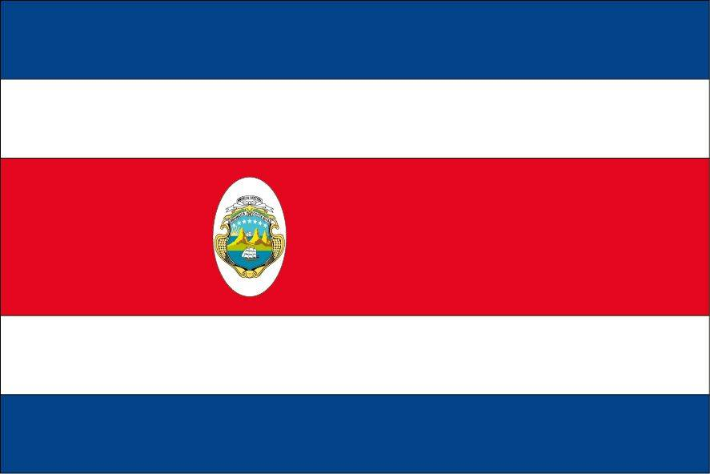
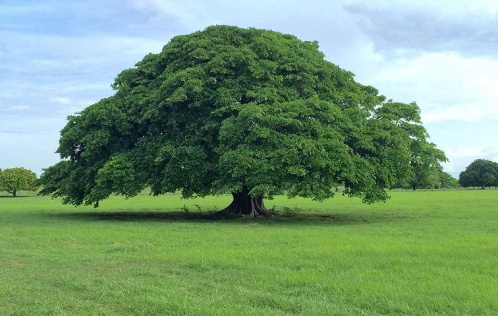
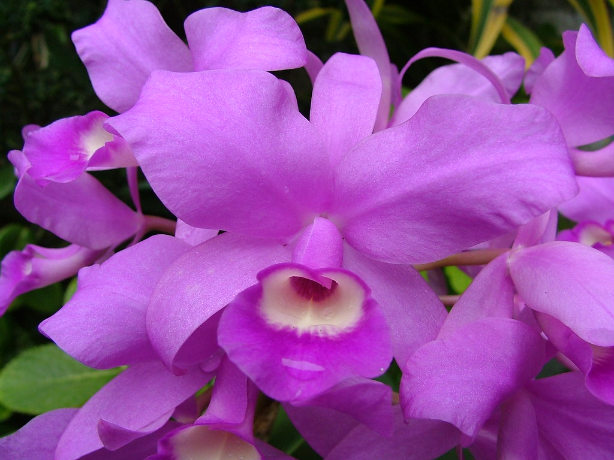
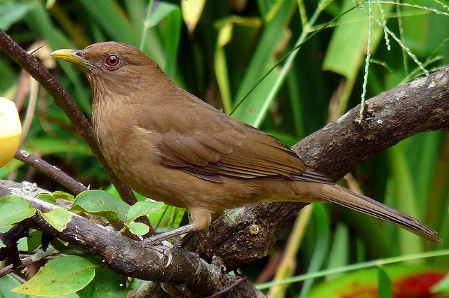

Simbolos Patrios
Bandera y Escudo
La Bandera de Costa Rica está formada por tres colores colocados horizontalmente, una franja roja en el centro entre dos blancas y a cada una de las cuales les sigue una azul. Fue creada el 29 de septiembre de 1848 junto con el Escudo Nacional. La tradición establece que la concepción y diseño de la actual bandera, vigente desde ese año, correspondió a Doña Pacífica Fernández Oreamuno, esposa del primer presidente de Costa Rica; José Castro Madriz, inspirada en la bandera de Francia.
Arbol Nacional
El árbol de Guanacaste fue declarado como el árbol nacional de Costa Rica el 31 de agosto de 1959, durante el gobierno de Mario Echandi Jiménez. Fue escogido como homenaje a los guanacastecos, por su Anexión del Partido de Nicoya al país en 1824. En estado natural, el árbol de Guanacaste se distribuye en ambos litorales, tanto el Pacífico como el Atlántico, pero es más común en el Pacífico, en altitudes que rondan los 0 y 1300 msnm. Se han encontrado especímenes en México, Centroamérica, el norte de Suramérica y las Antillas. Llega a medir quince metros de alto y el diámetro de su tronco puede ser de hasta cuatro metros. Es un árbol de tipo caducifolio. Es considerado un árbol vivaz, por su potencia y larga vida, que va de los 60 a 70 años.
Flor Nacional
La orquídea morada conocida popularmente como la guaria morada cuyo nombre cientfico es Cattleya Skineri florece en los meses de febrero y marzo.La guaria morada fue decretada como flor nacional en el gobierno de León Cortés Castro por la Secretaría del Estado en el Despacho de Fomento y Agricultura, por acuerdo No. 24 del 15 de junio de 1939. Posteriormente, mediante el acuerdo ejecutivo No. 24, de noviembre de 1972, bajo la presidencia de José Figueres Ferrer, se establece la segunda semana del mes de marzo como semana de la Orquídea Costarricense. En 1934, se compuso una canción dedicada a esta flor, que actualmente en uno de los himnos patrios de Costa Rica.
Ave Nacional
El yigüirro fue decretado ave nacional el 3 de enero de 1977, bajo la presidencia de Daniel Oduber Quirós, por iniciativa del poeta ramonense Eliseo Gamboa y el diputado Deseado Barboza, quienes fueron amantes y defensores de las aves. Fue declarado como tal como un tributo a su canto potente y melodioso que acompaña la entrada de la época lluviosa, además que fue considerado como un personaje importante dentro del folclore, de la literatura y de la música costarricense, en poesías, cuentos y canciones nacionales.